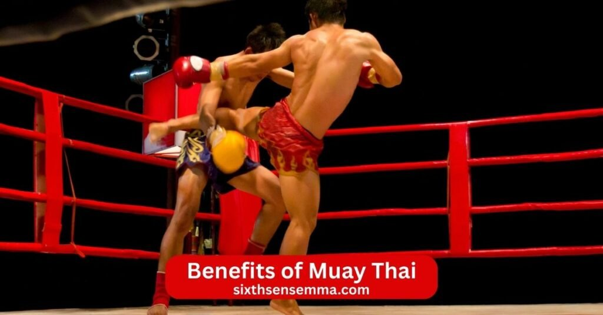
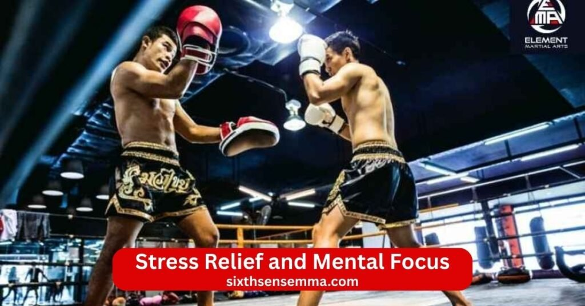

Top 10 Benefits of Muay Thai Fitness Confidence & Self Defense

Muay Thai is a powerful and complete martial art that originated in Thailand. It is often called the “Art of Eight Limbs” because it uses punches kicks elbows knees and clinch work together. The benefits of Muay Thai go far beyond just fighting or getting in shape. It strengthens your entire body builds serious stamina helps with weight loss boosts confidence reduces stress and teaches practical self defense skills that work in real life. Today more people are choosing Muay Thai because it is fun shows fast results and offers much more than a regular gym workout. Whether you are a complete beginner or someone with training experience Muay Thai gives you clear ways to improve your body mind and overall life.
- Full Body Workout
- Effective Weight Loss
- Improved Cardiovascular Health
- Practical Self Defense Skills
- Increased Strength and Power
- Better Balance and Coordination
- Stress Relief and Mental Focus
- Boosted Confidence
- Discipline and Mental Toughness
- Supportive Training Community
1. Full Body Workout
Muay Thai trains your whole body in every single session. Unlike workouts that focus on one area like legs or arms Muay Thai uses everything at once. Punches work your shoulders chest back and core. Kicks hit your hips glutes quads hamstrings and calves. Knees and elbows add power to your abs and upper body. Clinch work builds grip strength and full body tension.
You twist pivot push pull and explode in different directions. This constant full body movement makes Muay Thai one of the most efficient workouts you can do. Every major muscle group gets used and challenged. After a few months people notice balanced strength across their body with no weak spots left behind.
2. Effective Weight Loss
Muay Thai burns a ton of calories fast thanks to its nonstop intense action. A regular class blends cardio strength and explosive moves that keep your heart rate high almost the whole hour. You torch fat during bag work pad rounds shadowboxing and clinch drills. The high intensity approach creates an afterburn effect so your body keeps burning energy even after you finish training. Plenty of people drop weight steadily when they train on a regular basis because those sessions burn calories hard while adding lean muscle at the same time.
That extra muscle boosts your resting metabolism which means you burn more calories even on days you dont train. Folks usually notice clear changes in their body shape with less fat around the midsection arms and legs. Muay Thai makes losing weight feel easy and natural since the training stays fun and engaging so you actually look forward to going instead of dragging yourself through dull workouts.
3. Improved Cardiovascular Health
Muay Thai pushes your heart and lungs hard round after round. Sessions include long periods of striking moving and recovering that train both aerobic and anaerobic systems. Your heart gets stronger from the constant elevated heart rate. Blood flow improves oxygen use becomes more efficient and stamina grows noticeably. You find yourself handling longer efforts without getting as tired.
Regular training with Muuy Thai brings your resting heart rate down and builds real staying power that helps with everyday stuff like climbing stairs or chasing after kids. The way the sport works is great for your heart because it mixes quick hard bursts with longer stretches of effort just like life throws at you. Folks who keep going with it usually say they have way more energy all day long and bounce back much quicker after doing anything physical.
4. Practical Self Defense Skills
Muay Thai teaches self defense that works in real situations. The techniques are simple direct and powerful. Punches elbows knees and kicks target weak points on the body. Clinch lets you control distance and use close range strikes. You learn to block check kicks cover up and counter fast. Training includes realistic drills so movements become automatic under pressure.
Muay Thai keeps you standing and mobile which fits most street scenarios better than ground focused arts. The focus stays on creating space stopping threats quickly and escaping safely. Regular practice builds the ability to defend yourself with calm and control. Many people join for this reason alone and leave feeling much more prepared and less vulnerable in everyday life.
5. Increased Strength and Power
Muay Thai builds real functional strength and explosive power. Every strike starts from the ground up using legs hips core and shoulders together. Kicks and knees develop leg power. Punches and elbows add upper body force. Clinch work strengthens your grip back and core for pushing and pulling. Bag and pad training creates resistance that makes muscles work harder.
Over time you generate more power in every movement. This strength feels different from gym lifting because it is dynamic and usable. People notice they hit harder move objects easier and feel more capable in physical tasks. Muay Thai increases strength across the board while keeping you agile and quick.
6. Better Balance and Coordination
Muay Thai demands precise control of your body which naturally improves balance and coordination. You stand on one leg for high kicks pivot quickly for turns and shift weight during combos. Clinch requires staying stable while someone pushes or pulls you. Footwork drills sharpen your ability to move in any direction without losing base. Defensive slips and checks train timing between eyes hands and feet. Regular practice makes joints more mobile and muscles work together smoother.
Balance becomes rock solid so you stay steady even under pressure. Coordination improves as strikes flow in sequences that link upper and lower body. These gains show up in sports daily movements and just feeling more in control of your body.

7. Stress Relief and Mental Focus
Muay Thai clears your mind like few other activities can. When you train the outside world disappears. You focus only on the next strike your breathing or the coach’s call. The physical effort releases endorphins that lift your mood and leave you calmer afterward. Stress from work family or daily life melts away during hard rounds.
Mental focus sharpens because you cannot afford distractions when timing a kick or blocking a punch. Regular sessions improve concentration in other areas too like work or studying. Muay Thai becomes a healthy outlet to burn off tension and reset your headspace. Many people say they feel lighter and more centered after every class.
8. Boosted Confidence
Muay Thai raises confidence through real proof of what you can do. Each time you complete a tough round land a clean technique or push past limits you build inner belief. You see your body get stronger and your skills improve week by week. This progress creates quiet self assurance that spreads outside the gym. You stand taller speak more clearly and face challenges with less fear. Learning to defend yourself removes the helpless feeling many carry. Muay Thai boosts confidence in a deep way because it comes from earned ability not empty praise. People often notice they handle social situations work pressure or personal goals with new certainty.
9. Discipline and Mental Toughness
Muay Thai teaches discipline by requiring you to show up consistently even when you do not feel like it. You drill basics repeatedly follow a training schedule and push through fatigue. Mental toughness grows when you face hard sessions get corrected and keep going anyway. You learn discomfort is temporary and effort brings growth.
This mindset carries over to life. You tackle difficult tasks stay committed to goals and bounce back from setbacks easier. Muay Thai builds discipline and mental toughness through daily practice and real challenges. The habits become part of who you are and help you succeed in many areas.
10. Supportive Training Community
Muay Thai gyms often build strong positive communities. People from different backgrounds train side by side with shared respect and hard work. Beginners get encouragement from more experienced students. Coaches and training partners celebrate small wins and offer help without judgment. The group energy makes you want to show up and push harder.
Friendships form through sweat and progress. This supportive environment turns training into something bigger than solo exercise. You feel part of a team working toward better versions of yourselves. The community keeps motivation high and makes long term training enjoyable and sustainable.
Why Sixth Sense MMA Better to Other Muay Thai Gyms
Sixth Sense MMA stands out among Muay Thai gyms because it combines real skill teaching with strong focus on personal results. The academy creates an environment where students grow fast feel supported and see clear benefits. It goes beyond basic classes to deliver authentic training tailored to real needs.
Authentic Muay Thai Techniques Taught by Experts
Sixth Sense MMA teaches true Muay Thai techniques passed down properly. Instructors know the art deeply from traditional Thai methods to modern application. They focus on correct form power generation and timing so students learn the real thing not shortcuts. Punches kicks elbows knees and clinch come straight from proven Thai boxing principles. Experts break down every detail to make sure movements stay effective and safe. This authentic approach means you build skills that work in sparring self defense or competition. Other gyms sometimes water down techniques but Sixth Sense MMA keeps the tradition strong while adapting it for all levels.
Structured Training Programs for All Skill Levels
Sixth Sense MMA uses clear structured programs that fit everyone. Beginners start with basics like stance balance and simple strikes. Intermediate students add combos footwork and defense. Advanced classes dive into strategy sparring and conditioning. Programs progress logically so no one feels lost or held back. Small group sizes let coaches give personal attention and adjust for each person. Whether you have zero experience or years in martial arts the structure helps you advance steadily. This organized system makes learning faster and keeps motivation high.
Focus on Fitness Self Defense and Skill Development
Sixth Sense MMA balances three key areas in every program. Fitness comes through high intensity sessions that build strength endurance and fat loss. Self defense skills get real attention with practical striking clinch escapes and situational drills. Skill development stays central with technical coaching on form timing and strategy. The gym does not pick one focus over others. You gain a strong capable body tools to protect yourself and true Muay Thai ability. This complete approach sets it apart from places that lean too heavily on one aspect.
Proven Track Record of Student Progress and Success
Sixth Sense MMA shows real results through student progress. Many beginners transform into confident capable martial artists. People lose weight gain strength overcome fears and build lasting discipline. Testimonials highlight kids standing up to bullies adults feeling safer and everyone reaching personal goals. The gym tracks improvement through better technique cleaner strikes and increased confidence. Success stories come from consistent effort and expert guidance. This track record proves the methods work and builds trust for new students.
Flexible Class Schedules for Busy Adults
Sixth Sense MMA offers flexible schedules that fit real adult lives. Multiple class times throughout the week let you train before work after work or on weekends. Busy parents professionals and students find slots that match their routines. Unlimited options mean you can attend as often as possible without rigid restrictions. This flexibility keeps people consistent even with demanding schedules. You never feel forced to skip because a time does not work. The gym understands life gets full and designs training around that reality.
Why Choose Sixth Sense MMA for Muay Thai Training
Sixth Sense MMA gives you a clear choice when looking for Muay Thai training. The academy stands apart because it combines real Muay Thai knowledge with care for every student. From the moment you walk in you notice the difference in how training happens and how people treat each other. The focus stays on helping you grow in skill fitness confidence and safety. Many people try different gyms before finding one that fits and Sixth Sense MMA often becomes that place.
Certified and Experienced Muay Thai Coaches
Sixth Sense MMA has certified and experienced Muay Thai coaches who really know the art deeply. These instructors carry proper certifications in Muay Thai and they bring years of real training competition or teaching with them. They understand all the traditional Thai techniques from stance and footwork right through to strong clinch knees and elbows. The coaches dont just show the moves they take time to explain why every piece matters how you generate power starting from the ground up and how to push hard while keeping yourself safe.
With all their experience they catch tiny mistakes right away and correct them before those little things turn into bad habits. No matter if you want to know about a simple jab or something more advanced like counters they always give straight clear answers drawn from actual knowledge. This kind of coaching helps you trust them quickly because you can see the person teaching you has lived it and done well at it. When your coaches live and breathe Muay Thai every single day you end up progressing a lot faster.
Beginner Friendly and Advanced Training Programs
Sixth Sense MMA designs programs that work perfectly for beginners and advanced students alike. Beginners start in beginner friendly classes where everything breaks down slowly. You learn basic stance how to hold your hands proper punching form simple low kicks and basic defense without feeling rushed. Coaches make sure you feel comfortable and understand each step before moving on. As you gain confidence you move into mixed levels or advanced programs that add combos faster footwork clinch strategy and light sparring.
Safe Clean and Fully Equipped Training Facility
Safety cleanliness and equipment really stand out at Sixth Sense MMA. The place stays clean with regular deep cleaning of the mats floors pads and all the gear so you always feel comfortable training there. The mats give solid cushion and great grip which helps cut down on slips when you work on footwork or clinch stuff. The training space has plenty of room for bag work pad rounds and group drills without anyone feeling squeezed in.
All the equipment stays in excellent condition with heavy bags thai pads focus mitts shin guards gloves and everything else kept well maintained and swapped out when it needs to be. They pay close attention to lighting ventilation and temperature too so even the hardest sessions stay comfortable.
Personalized Coaching and Small Class Sizes
Sixth Sense MMA keeps classes small so coaching stays personalized. You get real attention from instructors instead of being one face in a big crowd. Coaches watch your movement correct your stance adjust your kick height or help with breathing during tough rounds. They remember your goals your weak spots and your progress from week to week. Small group sizes mean more turns on pads more feedback and less waiting around. This setup helps beginners feel supported and advanced students get the fine tuning they need.
Supportive Community and Professional Training Environment
The community at Sixth Sense MMA feels welcoming and strong from day one. Students come from different backgrounds ages and fitness levels but everyone shares respect for the art and for each other. People encourage new members cheer small wins and offer tips without ego. The environment stays professional with clear rules focus during class and positive energy throughout. No drama or showboating just hard work and mutual support. Coaches lead by example showing discipline respect and humility which sets the tone for the whole gym.
Contact US
If you’re ready to start Muay Thai training set new fitness goals learn practical self defense or just want to visit the gym and talk to the team we’re here waiting for you!
- 817 S MacArthur Blvd #100 Coppell TX 75019 United States
- Phone: (469) 972 7800
- Email: info@sixthsensemma.com
Conclusion
Muay Thai is much more than a martial art or a workout – it is a complete path to becoming stronger in body mind and spirit. From building full body strength and burning fat to sharpening self defense skills boosting confidence and teaching real discipline the benefits of Muay Thai touch every part of life. Whether you want to lose weight feel safer walking alone handle stress better or simply discover what you are truly capable of this training delivers results that keep growing the longer you stay consistent.
At Sixth Sense MMA you get the perfect place to start and keep going. With experienced coaches clean and safe facilities small classes for personal attention flexible schedules and a supportive community every session feels purposeful and encouraging. Beginners feel welcome right away and even advanced students find new challenges and growth.
Follow Us on Social Media
Stay connected with Sixth Sense MMA through our social media channels. Follow us for class updates, training tips, and a closer look at our self defense community.
FAQ’s
Muay Thai does wonders for your body in so many ways. It builds serious strength especially in your legs core and upper body through all the kicking punching and clinching. Your heart and lungs get a real workout from the constant movement which improves cardio health and endurance. It boosts flexibility from all the high kicks and stretches while also sharpening balance and coordination. On top of that it burns a ton of calories helps drop fat and adds lean muscle which keeps your metabolism humming even when you rest. Mentally it clears stress and builds toughness too so overall its one of the best full body things you can do.
Twenty five is nowhere near too late for Muay Thai. Plenty of people start in their twenties thirties or even later and do really well. Your body still adapts fast at that age you pick up technique quicker than when youre older and you usually have better focus and discipline. Pros often peak in their late twenties or early thirties so you have tons of time to get good if you train smart and stay consistent. Age twenty five is actually a great spot to jump in because youre young enough to progress hard but mature enough to train wisely and avoid dumb injuries.
Muay Thai gives you practical self defense skills using punches kicks knees elbows and clinch work that work in real situations. It builds full body strength power speed and stamina all at once. You get amazing cardio from the high intensity rounds plus better balance coordination and flexibility. It torches calories and helps reshape your body by dropping fat and adding muscle. Mentally it sharpens focus relieves stress boosts confidence and releases endorphins that leave you feeling calm and energized. The training stays engaging so you stick with it longer than boring routines and the community at good gyms keeps you motivated.
Muay Thai definitely changes your body when you train regularly. You lose fat especially around the midsection arms and legs because of the high calorie burn. Lean muscle builds up in your shoulders back legs and core giving you a more athletic toned look. Shoulders get broader legs get stronger and more defined and overall posture improves from better core strength. Many people drop weight steadily and see visible shape changes like a tighter waist and more muscle tone. The afterburn effect keeps your metabolism up so changes keep happening even on rest days. It sculpts a functional strong body not just big muscles.
Muay Thai beats a regular gym for most people who want real results and fun at the same time. A plain gym gives you weights and machines but Muay Thai combines strength cardio skill and explosive power all in one session. You work your whole body harder because every move connects and you keep moving nonstop. It builds functional strength that carries over to real life way better than isolated lifts. Plus the skill learning and pad bag work make it way more exciting so you show up consistently instead of dreading workouts. If your goal is to get fit strong lean and capable Muay Thai usually gets you there faster and keeps you hooked longer.
Three times a week is solid for Muay Thai especially if youre starting out or balancing it with work and life. You see good progress in fitness strength technique and body changes with that schedule. It gives your body enough recovery between sessions to avoid burnout or injury while still building endurance and skill. Beginners often improve a lot on three days and even experienced folks maintain or keep advancing with it. If you want faster gains you can add more later but three solid sessions a week is more than enough to get real benefits and stay consistent long term.
Both are tough but in different ways so it depends on you. Muay Thai feels harder at first because of the nonstop cardio explosive power and getting hit which tests your toughness and conditioning right away. Jiu jitsu is brutal on the ground with constant pressure straining grips and mental chess that wears you down over longer rolls. Muay Thai hits your lungs and legs harder early on while jiu jitsu taxes your grip neck and patience more. Many people say Muay Thai is more physically intense upfront but jiu jitsu can feel harder mentally and for endurance in long sessions. They both demand a lot so whichever one scares you more is probably the tougher one for you personally.
The golden age for Muay Thai fighters usually lands between twenty five and thirty five. Thats when most pros hit their physical prime with the best mix of strength speed power endurance and experience. By then they have years of training and fights under their belt so technique stays sharp while the body can still handle the punishment. Fighters often peak in their late twenties or early thirties before recovery starts slowing a bit. Thats the window where you see the highest level of skill combined with raw athletic ability in the ring.
Mike Tyson started boxing when he was around thirteen years old. He got into it after meeting trainer Cus DAmato who saw his raw talent and took him under his wing. By his mid teens he was already dominating amateur fights and turned pro at eighteen. That early start helped him build the explosive power and skill that made him the youngest heavyweight champion ever.
Train with us in Coppell
The first class is free. Shorts, a t-shirt and a water bottle. We lend the rest.
Book a free class